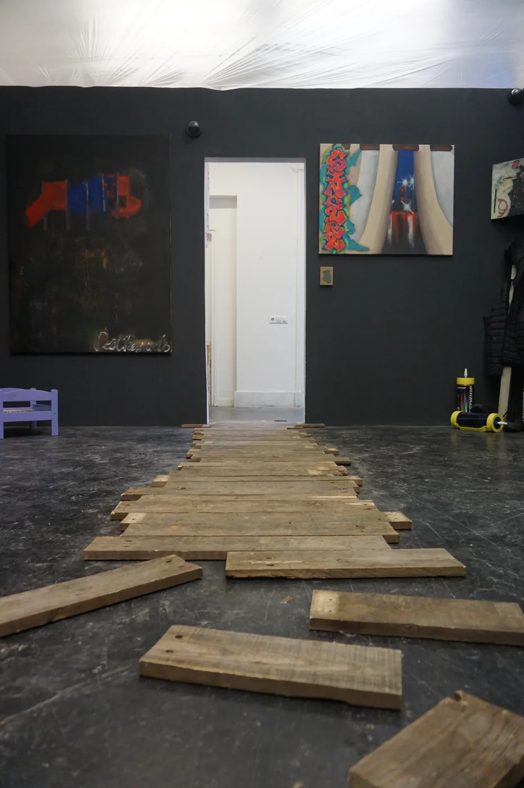
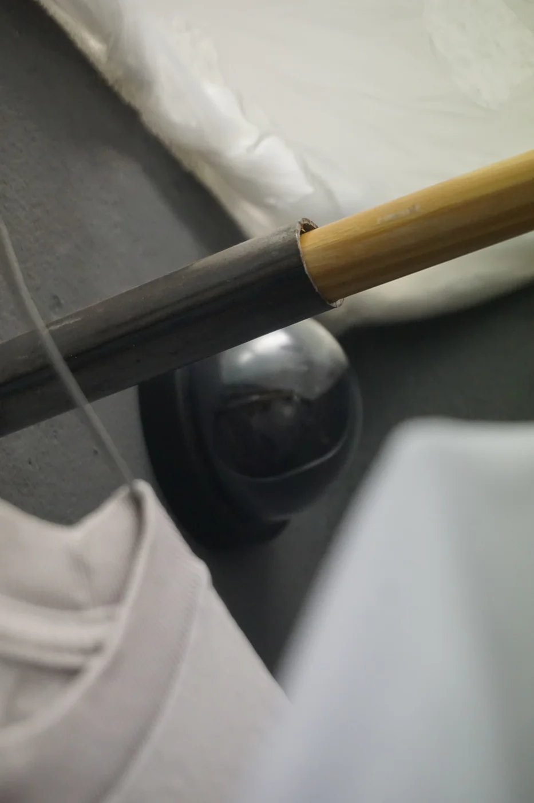
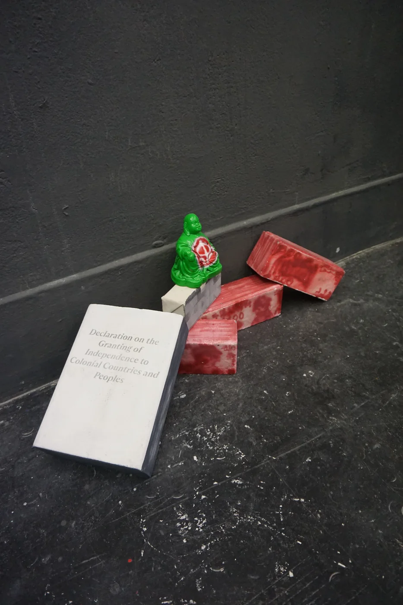
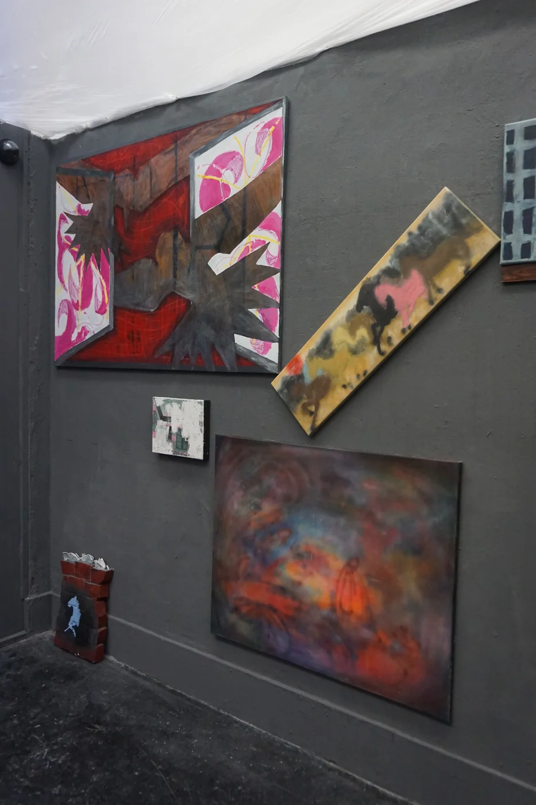
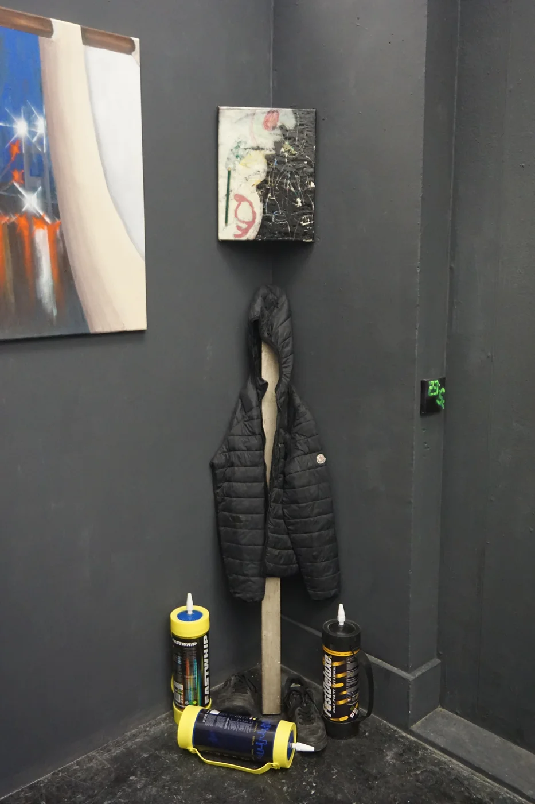

Enclave: In-between threshold





Hong Kong has always been a place of ambiguity and in-betweenness because of its colonial history and current political scenario. This enclave composed my introspection on my cultural identity and observation of surroundings through traveling.
Discovering what could it mean of being a Hongkonger in an auto-ethnographic approach.
I'm inspired by the concept of auto-ethnographic, which each person has their own experience and perspective.
Every works are in its individual yet interconnected, like a web of stories. I used clustering as my methodology,
where I collect and connect different elements to create a larger narrative.